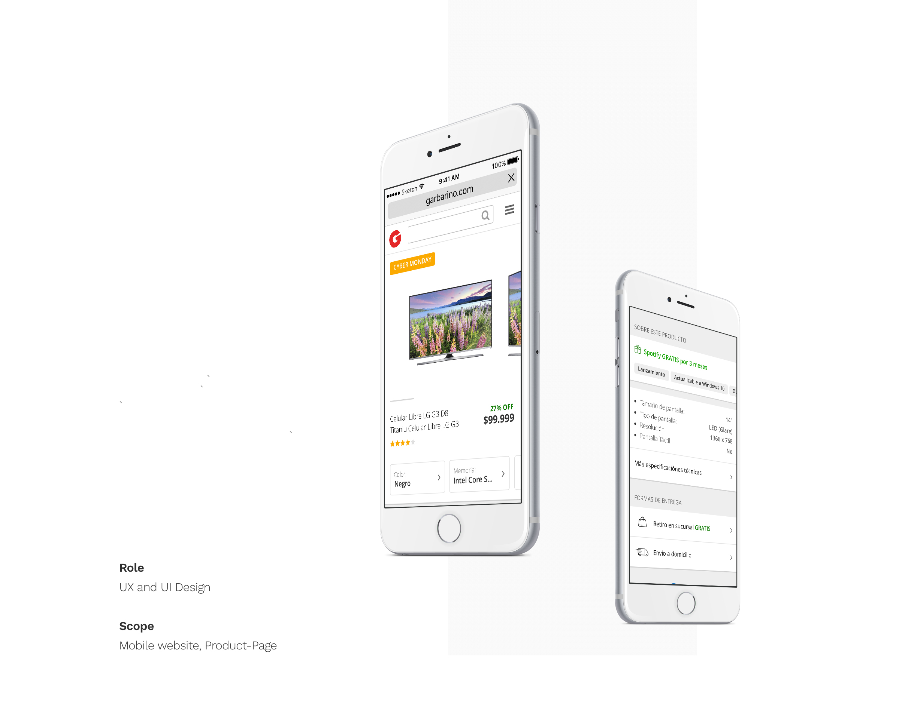
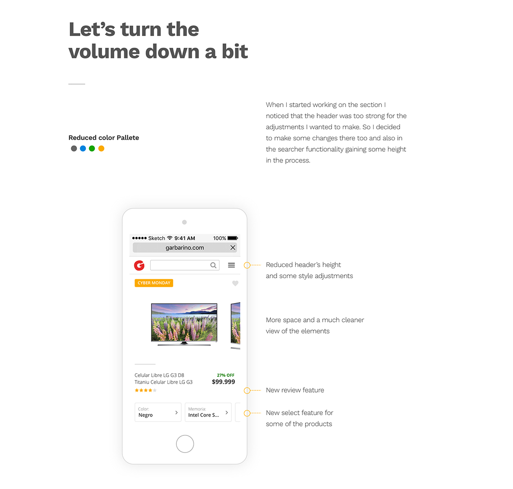
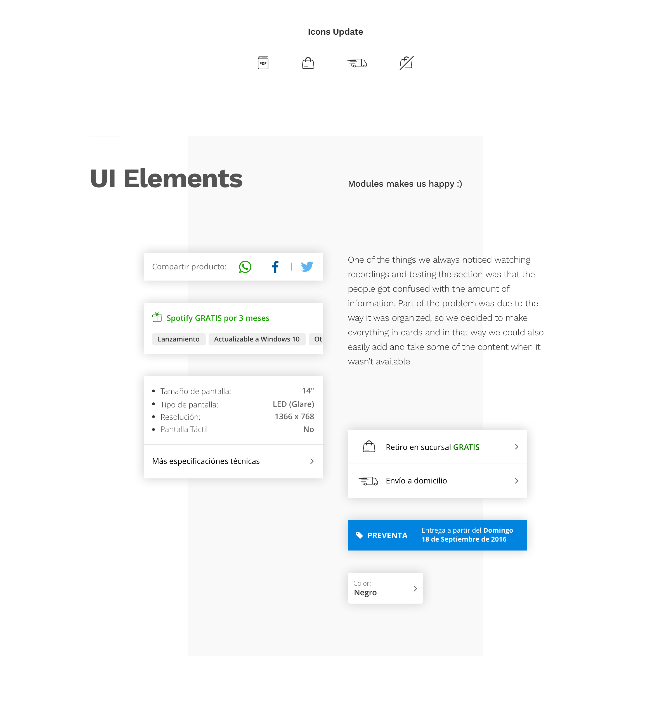
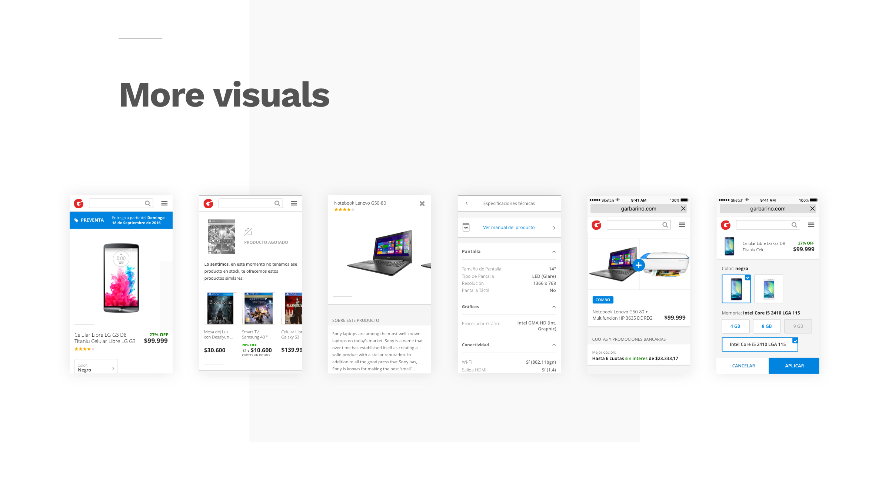
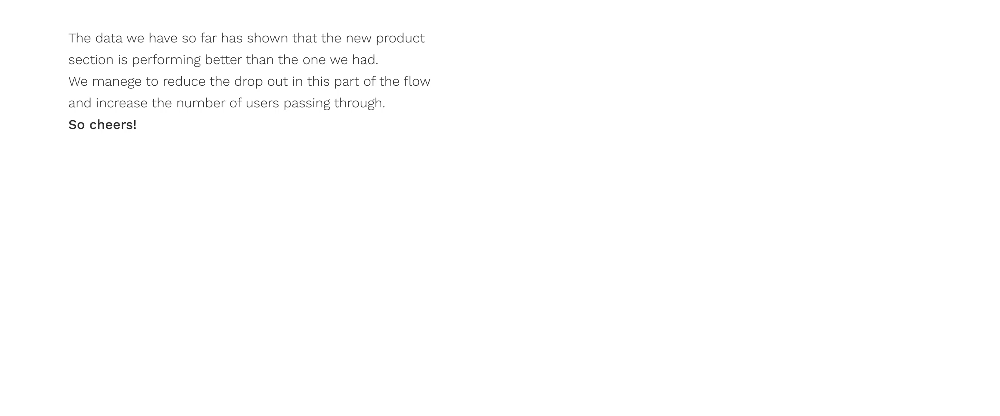
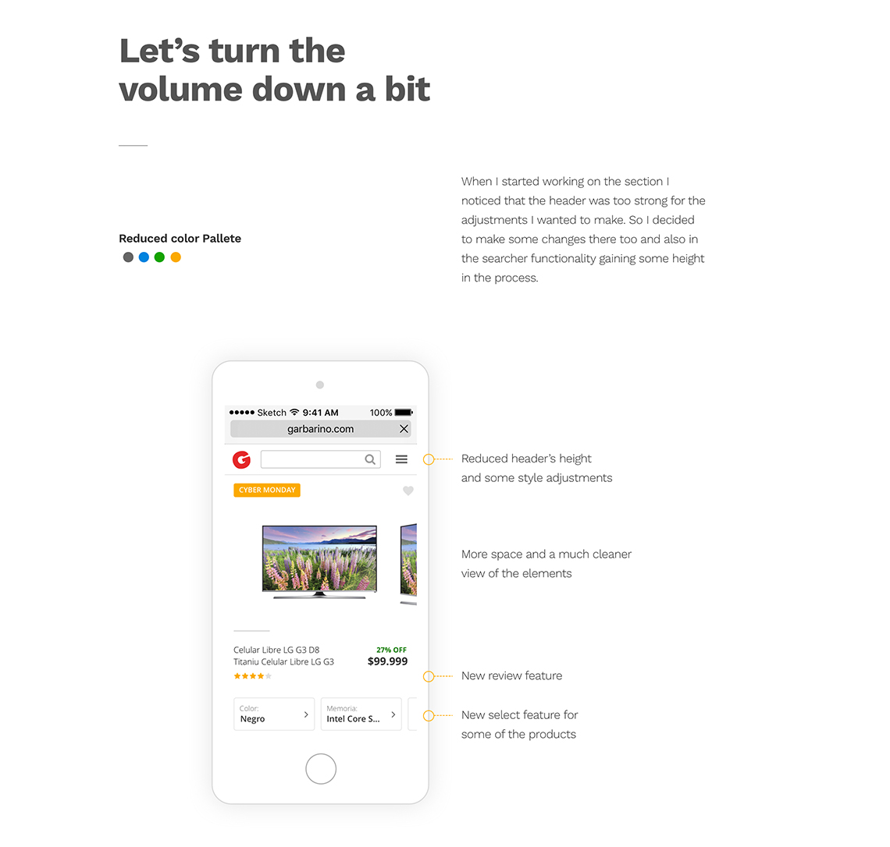
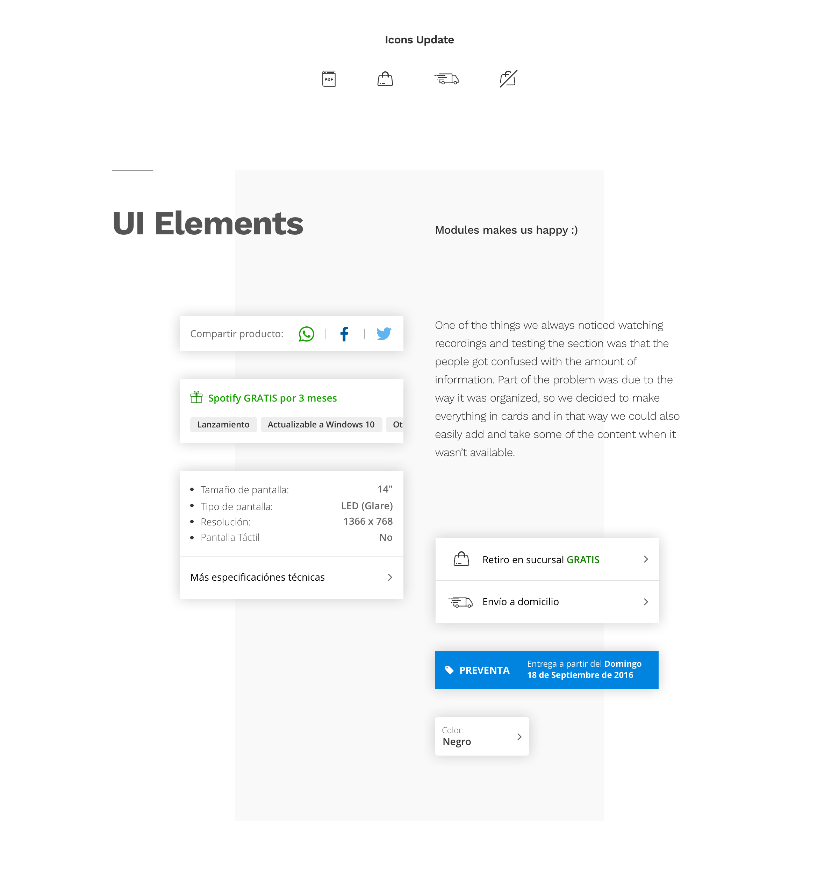
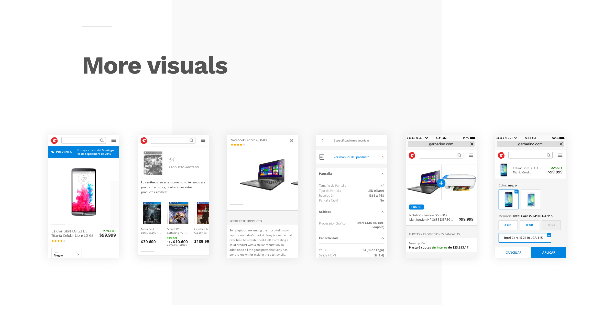
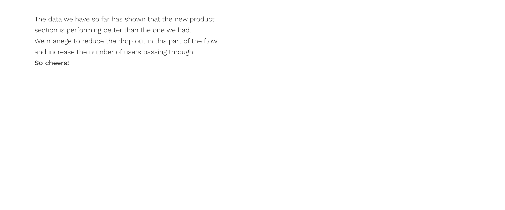

Garbarino.com
UI, UX
The project
Garbarino needed to improve the performance and look and feel of their mobile product section. A redesign was being made on the desktop version so it had to match the new functionalities applied there.
The challenge
Every developers team at Garbarino has it's own part of the web to take care off, this makes that some changes are applied in a section first than another. So we decided to use this product section, due to the amount of information and functionality that it has, to be the one that is going to set the foundations for all the other parts of the mobile web.

 






